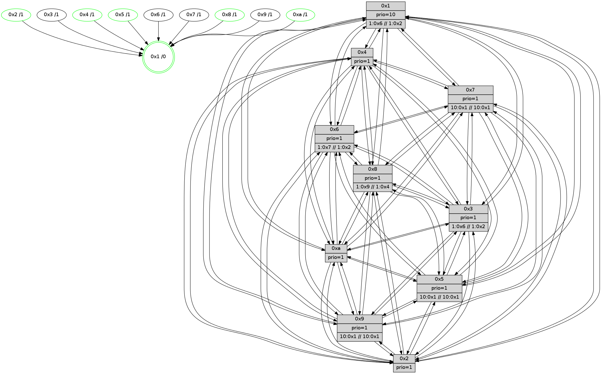

>> << IDX [start] -100 -25 -5 +0 +5 +25 +100 [625.416470051]
 Previous packets
620.000726 [Hello(7): seq=398 sym=2,3,5,6,4,8,9,10,1 asym= sysInfo= stat=2:7,9,2,8/3:4,3,1,7/5:7,8,15,8/6:6,5,1,0/4:6,11,0,5/8:1,10,2,4/9:13,13,1,7/10:8,3,1,6/1:14,1,9,0]
620.003143 [Hello(1): seq=307 sym=4,2,9,5,10,3,8,6,7 sysInfo=coloring-mode-on,ColoringModeRequestCalled stat=4:7,14,2,6/2:7,8,2,7/9:3,0,0,0/5:1,13,3,7/10:0,13,4,6/3:7,6,8,8/8:11,3,8,5/6:2,13,5,4/7:9,5,8,7]
620.005975 [Hello(2): seq=395 sym=4,5,7,6,3,9,8,10,1 sysInfo=hasWarning stat=4:8,12,13,3/5:2,2,10,4/7:6,2,15,3/6:11,10,14,4/3:0,13,7,1/9:10,5,9,1/8:0,3,8,3/10:11,1,10,3/1:5,8,3,0]
620.008765 [Color(8) seq=78 @0:0 prio=1 >1.@6,1.@7,1.@9,1.@a >>1.@2,1.@3,1.@4]
620.011542 [STC(1) #0.42 tree-change,inconsistent-stability,stable,to-color d=0]
620.014251 [Hello(6): seq=398 sym=2,3,5,4,7,9,8,10,1 sysInfo= stat=2:1,15,4,5/3:10,5,0,5/5:10,5,15,7/4:6,2,15,6/7:1,1,1,0/9:4,2,1,6/8:10,2,15,5/10:12,5,3,5/1:14,6,7,0]
620.018273 [Color(5) seq=62 @0:0 prio=1 >10.@1,1.@4,1.@6,1.@7 >>10.@1,1.@2,1.@3]
----------------------------------------------------------------------
620.687686 beacon01(faad) #0 coord=01,02,03,04,05,06,07,0a,09,08 cycle=688.0ms assoc
-- color-indic=1 64 f5 b0
620.697669 beacon02(faad) #0 coord=01,02,03,04,05,06,07,0a,09,08 cycle=688.0ms assoc 64 66 81
620.707668 beacon03(faad) #0 coord=01,02,03,04,05,06,07,0a,09,08 cycle=688.0ms assoc 64 1c cc
620.717669 beacon04(faad) #0 coord=01,02,03,04,05,06,07,0a,09,08 cycle=688.0ms assoc 64 6b 26
620.727669 beacon05(faad) #0 coord=01,02,03,04,05,06,07,0a,09,08 cycle=688.0ms assoc 64 11 6b
620.737670 beacon06(faad) #0 coord=01,02,03,04,05,06,07,0a,09,08 cycle=688.0ms assoc 64 9f bc
620.747670 beacon07(faad) #0 coord=01,02,03,04,05,06,07,0a,09,08 cycle=688.0ms assoc 64 e5 f1
620.757675 beacon0a(faad) #0 coord=01,02,03,04,05,06,07,0a,09,08 cycle=688.0ms assoc 64 94 fa
620.767674 beacon09(faad) #0 coord=01,02,03,04,05,06,07,0a,09,08 cycle=688.0ms assoc 64 1a 2d
620.777674 beacon08(faad) #0 coord=01,02,03,04,05,06,07,0a,09,08 cycle=688.0ms assoc 64 60 60
620.788614 [STC(7)->1 #0.42 tree-change,inconsistent-stability,to-color d=1]
620.791030 [STC(2)->1 #0.42 tree-change,inconsistent-stability,stable,to-color d=1]
620.795128 [Hello(5): seq=399 sym=7,6,4,3,1,9,8,10,2 sysInfo= stat=7:1,8,1,3/6:5,5,1,4/4:13,5,10,4/3:10,14,9,2/1:9,13,8,0/9:8,9,14,3/8:10,12,8,4/10:10,15,13,4/2:5,12,12,3]
620.797972 [STC(8)->1 #0.42 tree-change,inconsistent-stability,stable,to-color d=1]
620.800814 [Color(1) seq=79 @0:0 prio=10 >1.@6,1.@7,1.@8,1.@9 >>1.@2,1.@3,1.@4]
620.802842 [TreeStatus(2)-.->1 #0.42 tree-change,inconsistent-stability,stable child=1]
620.804964 [STC(4)->1 #0.42 tree-change,inconsistent-stability,stable,to-color d=1]
620.806282 [Hello(10): seq=331 sym=6,2,3,8,9,5,7,4,1 sysInfo= stat=6:13,10,1,0/2:13,14,4,1/3:4,1,5,1/8:6,9,12,5/9:3,5,10,3/5:7,2,9,5/7:6,11,12,2/4:2,6,8,6/1:9,5,9,0]
620.809491 [Hello(9): seq=342 sym=5,2,3,4,7,6,8,10,1 sysInfo=hasWarning stat=5:13,2,11,6/2:6,6,15,5/3:14,10,11,4/4:15,3,11,5/7:6,13,0,2/6:15,3,13,4/8:7,11,1,1/10:11,8,13,6/1:2,9,11,0]
620.812645 [TreeStatus(4)-.->1 #0.42 tree-change,inconsistent-stability,stable child=1]
620.814289 [Hello(3): seq=399 sym=1,7,6,2,4,8,9,10,5 sysInfo= stat=1:11,14,11,0/7:4,0,12,3/6:13,3,10,5/2:4,6,12,7/4:14,3,12,4/8:14,8,9,1/9:1,5,15,5/10:0,5,10,4/5:0,0,13,5]
620.817442 [STC(3)->1 #0.42 to-color d=1]
620.819942 [STC(9)->1 #0.42 tree-change,inconsistent-stability,to-color d=1]
620.824044 [STC(10)->1 #0.42 tree-change,inconsistent-stability,stable,to-color d=1]
620.825686 [TreeStatus(10)-.->1 #0.42 tree-change,inconsistent-stability,stable child=1]
----------------------------------------------------------------------
621.475818 beacon01(faad) #0 coord=01,02,03,04,05,06,07,0a,09,08 cycle=688.0ms assoc
-- color-indic=1 64 31 be
621.485801 beacon02(faad) #0 coord=01,02,03,04,05,06,07,0a,09,08 cycle=688.0ms assoc 64 a2 8f
621.495800 beacon03(faad) #0 coord=01,02,03,04,05,06,07,0a,09,08 cycle=688.0ms assoc 64 d8 c2
621.505801 beacon04(faad) #0 coord=01,02,03,04,05,06,07,0a,09,08 cycle=688.0ms assoc 64 af 28
621.515801 beacon05(faad) #0 coord=01,02,03,04,05,06,07,0a,09,08 cycle=688.0ms assoc 64 d5 65
621.525801 beacon06(faad) #0 coord=01,02,03,04,05,06,07,0a,09,08 cycle=688.0ms assoc 64 5b b2
621.535800 beacon07(faad) #0 coord=01,02,03,04,05,06,07,0a,09,08 cycle=688.0ms assoc 64 21 ff
621.545806 beacon0a(faad) #0 coord=01,02,03,04,05,06,07,0a,09,08 cycle=688.0ms assoc 64 50 f4
621.555806 beacon09(faad) #0 coord=01,02,03,04,05,06,07,0a,09,08 cycle=688.0ms assoc 64 de 23
621.565809 beacon08(faad) #0 coord=01,02,03,04,05,06,07,0a,09,08 cycle=688.0ms assoc 64 a4 6e
621.577035 [TreeStatus(3)-.->1 #0.42 tree-change,inconsistent-stability child=1]
621.578265 [Hello(1): seq=308 sym=4,2,9,5,10,3,8,6,7 sysInfo=coloring-mode-on,ColoringModeRequestCalled stat=4:7,14,3,7/2:7,8,2,8/9:4,0,1,0/5:1,14,3,7/10:1,13,5,7/3:8,6,9,8/8:11,3,8,5/6:3,13,5,4/7:9,5,9,7]
621.584098 [Hello(6): seq=399 sym=2,3,5,4,7,9,8,10,1 sysInfo= stat=2:1,15,5,6/3:11,5,1,5/5:11,6,15,7/4:6,2,0,7/7:1,1,2,0/9:5,2,2,6/8:11,2,0,5/10:13,5,4,6/1:14,7,7,0]
621.586829 [Hello(7): seq=399 sym=2,3,5,6,4,8,9,10,1 sysInfo=hasWarning stat=2:8,9,3,9/3:5,3,2,7/5:8,9,15,8/6:7,5,1,0/4:6,11,1,6/8:2,11,3,4/9:14,13,2,7/10:9,3,2,7/1:15,2,10,0]
621.590116 [TreeStatus(1) #0.42 tree-change,inconsistent-stability,stable child=9]
621.592916 [Color(8) seq=79 @0:0 prio=1 >1.@6,1.@7,1.@9,1.@a >>1.@2,1.@3,1.@4]
622.303933 beacon05(faad) #0 coord=01,02,03,04,05,06,07,0a,09,08 cycle=688.0ms assoc 64 69 60
622.333938 beacon0a(faad) #0 coord=01,02,03,04,05,06,07,0a,09,08 cycle=688.0ms assoc 64 ec f1
622.366497 [Hello(8): seq=343 sym=5,2,3,4,7,6,9,10,1 sysInfo=hasWarning,coloring-mode-on,ColoringModeIndicationCalled stat=5:12,2,12,5/2:14,14,3,1/3:5,2,13,7/4:9,5,15,6/7:15,10,1,4/6:11,9,13,5/9:3,4,1,4/10:1,13,12,6/1:0,12,11,0]
622.370704 [Hello(10): seq=332 sym=6,2,3,8,9,5,7,4,1 sysInfo= stat=6:14,10,1,0/2:14,14,4,1/3:4,1,5,2/8:6,10,12,5/9:3,5,10,3/5:7,2,9,5/7:7,11,13,2/4:2,6,8,6/1:10,5,9,1]
622.376294 [Hello(5): seq=400 sym=7,6,4,3,1,9,8,10,2 sysInfo= stat=7:2,8,1,3/6:6,5,1,4/4:13,5,11,5/3:11,14,10,3/1:10,14,8,1/9:9,9,15,3/8:10,13,9,4/10:11,15,14,5/2:5,12,12,4]
622.381436 [Hello(9): seq=343 sym=5,2,3,4,7,6,8,10,1 sysInfo=hasWarning stat=5:13,2,11,6/2:6,6,15,5/3:14,10,11,5/4:15,3,11,5/7:7,13,1,2/6:0,3,13,4/8:7,12,1,1/10:11,8,14,7/1:3,9,11,1]
622.392342 [Color(1) seq=80 @0:0 prio=10 >1.@6,1.@7,1.@8,1.@9 >>1.@2,1.@3,1.@4]
----------------------------------------------------------------------
623.052079 beacon01(faad) #0 coord=01,02,03,04,05,06,07,0a,09,08 cycle=688.0ms assoc
-- color-indic=1 64 59 8e
623.062061 beacon02(faad) #0 coord=01,02,03,04,05,06,07,0a,09,08 cycle=688.0ms assoc 64 ca bf
623.072062 beacon03(faad) #0 coord=01,02,03,04,05,06,07,0a,09,08 cycle=688.0ms assoc 64 b0 f2
623.082061 beacon04(faad) #0 coord=01,02,03,04,05,06,07,0a,09,08 cycle=688.0ms assoc 64 c7 18
623.092061 beacon05(faad) #0 coord=01,02,03,04,05,06,07,0a,09,08 cycle=688.0ms assoc 64 bd 55
623.102061 beacon06(faad) #0 coord=01,02,03,04,05,06,07,0a,09,08 cycle=688.0ms assoc 64 33 82
623.112063 beacon07(faad) #0 coord=01,02,03,04,05,06,07,0a,09,08 cycle=688.0ms assoc 64 49 cf
623.122066 beacon0a(faad) #0 coord=01,02,03,04,05,06,07,0a,09,08 cycle=688.0ms assoc 64 38 c4
623.132066 beacon09(faad) #0 coord=01,02,03,04,05,06,07,0a,09,08 cycle=688.0ms assoc 64 b6 13
623.142066 beacon08(faad) #0 coord=01,02,03,04,05,06,07,0a,09,08 cycle=688.0ms assoc 64 cc 5e
623.158160 [Color(5) seq=64 @0:0 prio=1 >10.@1,1.@4,1.@6,1.@7 >>10.@1,1.@2,1.@3]
623.160117 [Color(10) seq=58 @0:0 prio=1]
623.163485 [Hello(4): seq=400 sym=5,7,6,2,3,9,8,10,1 sysInfo= stat=5:0,9,12,6/7:14,4,0,2/6:4,10,15,5/2:13,7,11,6/3:4,11,7,3/9:5,13,12,3/8:12,0,14,6/10:3,0,15,6/1:8,10,11,1]
623.168543 [Hello(7): seq=400 sym=2,3,5,6,4,8,9,10,1 sysInfo=hasWarning stat=2:8,9,3,9/3:5,3,2,7/5:9,9,15,8/6:7,5,1,0/4:6,11,1,6/8:3,12,3,4/9:15,13,2,7/10:10,3,2,7/1:15,3,10,1]
623.171136 [Hello(1): seq=309 sym=4,2,9,5,10,3,8,6,7 sysInfo=coloring-mode-on,ColoringModeRequestCalled stat=4:7,14,3,7/2:7,8,2,8/9:4,0,1,0/5:1,14,3,7/10:1,13,5,7/3:8,6,9,8/8:12,4,8,5/6:3,13,5,4/7:9,5,9,7]
623.177927 [Color(8) seq=80 @0:0 prio=1 >1.@6,1.@7,1.@9,1.@a >>1.@2,1.@3,1.@4]
----------------------------------------------------------------------
623.840209 beacon01(faad) #0 coord=01,02,03,04,05,06,07,0a,09,08 cycle=688.0ms assoc
-- color-indic=1 64 e5 8b
623.850192 beacon02(faad) #0 coord=01,02,03,04,05,06,07,0a,09,08 cycle=688.0ms assoc 64 76 ba
623.860193 beacon03(faad) #0 coord=01,02,03,04,05,06,07,0a,09,08 cycle=688.0ms assoc 64 0c f7
623.870192 beacon04(faad) #0 coord=01,02,03,04,05,06,07,0a,09,08 cycle=688.0ms assoc 64 7b 1d
623.880192 beacon05(faad) #0 coord=01,02,03,04,05,06,07,0a,09,08 cycle=688.0ms assoc 64 01 50
623.890192 beacon06(faad) #0 coord=01,02,03,04,05,06,07,0a,09,08 cycle=688.0ms assoc 64 8f 87
623.900193 beacon07(faad) #0 coord=01,02,03,04,05,06,07,0a,09,08 cycle=688.0ms assoc 64 f5 ca
623.910197 beacon0a(faad) #0 coord=01,02,03,04,05,06,07,0a,09,08 cycle=688.0ms assoc 64 84 c1
623.920197 beacon09(faad) #0 coord=01,02,03,04,05,06,07,0a,09,08 cycle=688.0ms assoc 64 0a 16
623.930199 beacon08(faad) #0 coord=01,02,03,04,05,06,07,0a,09,08 cycle=688.0ms assoc 64 70 5b
623.941382 [Hello(9): seq=344 sym=5,2,3,4,7,6,8,10,1 sysInfo=hasWarning stat=5:13,3,11,6/2:6,6,15,5/3:14,10,11,5/4:0,3,11,5/7:8,13,1,2/6:0,3,13,4/8:7,13,1,1/10:11,9,14,7/1:4,10,11,1]
623.944119 [Hello(8): seq=344 sym=5,2,3,4,7,6,9,10,1 sysInfo=hasWarning,coloring-mode-on,ColoringModeIndicationCalled stat=5:13,2,12,5/2:14,14,3,1/3:5,2,13,7/4:9,5,15,6/7:15,10,1,4/6:12,9,13,5/9:4,4,1,4/10:2,13,12,6/1:0,13,11,0]
623.947757 [STC(1) #0.43 tree-change,inconsistent-stability,stable,to-color d=0]
623.949525 [Hello(2): seq=397 sym=4,5,7,6,3,9,8,10,1 mpr= sysInfo=hasWarning stat=4:9,12,14,4/5:3,4,10,4/7:8,2,0,3/6:13,10,14,4/3:1,13,8,1/9:12,5,10,1/8:1,6,8,3/10:13,2,11,4/1:6,9,4,1]
623.952672 [Color(2) seq=46 @0:0 prio=1]
623.954941 [Color(1) seq=81 @0:0 prio=10 >1.@6,1.@7,1.@8,1.@9 >>1.@2,1.@3,1.@4]
623.958803 [Color(4) seq=44 @0:0 prio=1]
623.962764 [Hello(10): seq=333 sym=6,2,3,8,9,5,7,4,1 sysInfo= stat=6:15,10,1,0/2:14,14,4,1/3:4,1,5,2/8:6,11,12,5/9:4,5,10,3/5:8,2,9,5/7:8,11,13,2/4:3,6,8,6/1:11,6,9,1]
623.965312 [Hello(5): seq=401 sym=7,6,4,3,1,9,8,10,2 sysInfo= stat=7:3,8,1,3/6:6,5,1,4/4:14,5,11,5/3:11,14,10,3/1:11,15,8,1/9:10,9,15,3/8:10,14,9,4/10:11,0,14,5/2:5,12,12,4]
----------------------------------------------------------------------
624.628339 beacon01(faad) #0 coord=01,02,03,04,05,06,07,0a,09,08 cycle=688.0ms assoc
-- color-indic=1 64 21 85
624.638322 beacon02(faad) #0 coord=01,02,03,04,05,06,07,0a,09,08 cycle=688.0ms assoc 64 b2 b4
624.648323 beacon03(faad) #0 coord=01,02,03,04,05,06,07,0a,09,08 cycle=688.0ms assoc 64 c8 f9
624.658322 beacon04(faad) #0 coord=01,02,03,04,05,06,07,0a,09,08 cycle=688.0ms assoc 64 bf 13
624.668322 beacon05(faad) #0 coord=01,02,03,04,05,06,07,0a,09,08 cycle=688.0ms assoc 64 c5 5e
624.678321 beacon06(faad) #0 coord=01,02,03,04,05,06,07,0a,09,08 cycle=688.0ms assoc 64 4b 89
624.688324 beacon07(faad) #0 coord=01,02,03,04,05,06,07,0a,09,08 cycle=688.0ms assoc 64 31 c4
624.698330 beacon0a(faad) #0 coord=01,02,03,04,05,06,07,0a,09,08 cycle=688.0ms assoc 64 40 cf
624.708328 beacon09(faad) #0 coord=01,02,03,04,05,06,07,0a,09,08 cycle=688.0ms assoc 64 ce 18
624.718329 beacon08(faad) #0 coord=01,02,03,04,05,06,07,0a,09,08 cycle=688.0ms assoc 64 b4 55
624.730184 [Hello(4): seq=401 sym=5,7,6,2,3,9,8,10,1 sysInfo= stat=5:1,9,12,6/7:15,4,0,2/6:4,10,15,5/2:13,7,11,6/3:4,11,7,3/9:6,13,12,3/8:12,1,14,6/10:4,0,15,6/1:9,10,11,1]
624.732913 [Color(10) seq=59 @0:0 prio=1]
624.734350 [Hello(3): seq=401 sym=1,7,6,2,4,8,9,10,5 sysInfo= stat=1:13,0,12,1/7:6,0,13,3/6:14,3,10,5/2:6,7,12,7/4:15,4,12,4/8:0,10,9,1/9:3,5,0,5/10:2,6,11,5/5:2,1,13,5]
624.737530 [Hello(1): seq=310 sym=4,2,9,5,10,3,8,6,7 sysInfo=coloring-mode-on,ColoringModeRequestCalled stat=4:7,15,3,7/2:7,8,2,8/9:5,0,1,0/5:2,14,3,7/10:2,13,5,7/3:8,6,9,8/8:12,5,8,5/6:3,13,5,4/7:9,5,9,7]
624.741129 [STC(3)->1 #0.43 tree-change,inconsistent-stability,to-color d=1]
624.743269 [STC(9)->1 #0.43 tree-change,inconsistent-stability,to-color d=1]
624.745161 [Hello(7): seq=401 sym=2,3,5,6,4,8,9,10,1 sysInfo=hasWarning stat=2:9,10,3,9/3:5,3,2,7/5:10,9,15,8/6:7,5,1,0/4:6,12,1,6/8:4,13,3,4/9:0,13,2,7/10:11,3,2,7/1:0,4,11,1]
624.747918 [Hello(6): seq=401 sym=2,3,5,4,7,9,8,10,1 sysInfo= stat=2:2,0,5,6/3:11,5,1,5/5:13,7,15,7/4:7,3,0,7/7:3,1,2,0/9:7,2,2,6/8:13,4,0,5/10:15,6,4,6/1:15,9,8,1]
624.750476 [STC(8)->1 #0.43 tree-change,inconsistent-stability,stable,to-color d=1]
624.752104 [TreeStatus(8)-.->1 #0.43 tree-change,inconsistent-stability,stable child=1]
624.754334 [STC(7)->1 #0.43 tree-change,inconsistent-stability,to-color d=1]
624.758360 [STC(6)->1 #0.43 tree-change,inconsistent-stability,to-color d=1]
624.760322 [Color(5) seq=65 @0:0 prio=1 >10.@1,1.@a >>10.@1,1.@2,1.@3]
624.770024 [Color(8) seq=81 @0:0 prio=1 >1.@9,1.@a >>1.@4,1.@6,1.@7]